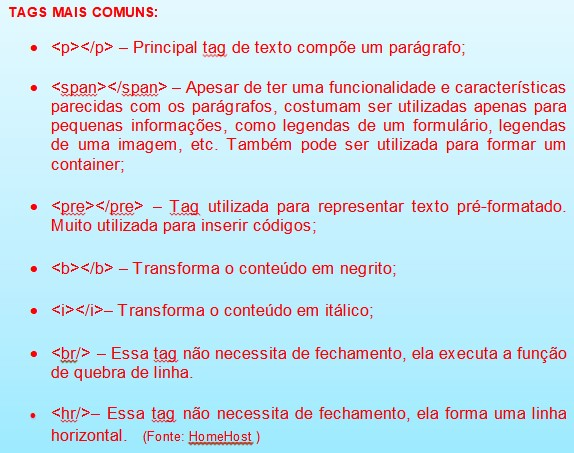

Descrição da imagem:fundo azul esverdeado claro com letras vermelhas.Tags mais comuns:
<p></p> – Principal tag de texto, compõe um parágrafo;
<span></span> – Apesar de ter uma funcionalidade e características parecidas com os parágrafos, costumam ser utilizadas apenas para pequenas informações, como legendas de um formulário, legendas de uma imagem, etc. Também pode ser utilizada para formar um container;
<pre></pre>– Tag utilizada para representar texto pré-formatado. Muito utilizada para inserir códigos;
<b></b> – Transforma o conteúdo em negrito;
<i></i>– Transforma o conteúdo em itálico;
<br/> – Essa tag não necessita de fechamento, ela executa a função de quebra de linha.
<hr/>– Essa tag não necessita de fechamento, ela forma uma linha horizontal.